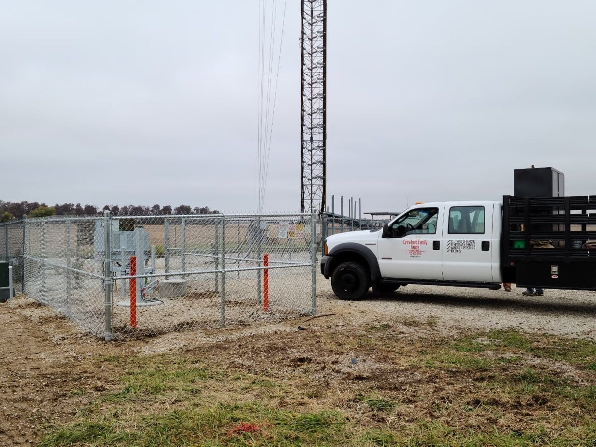
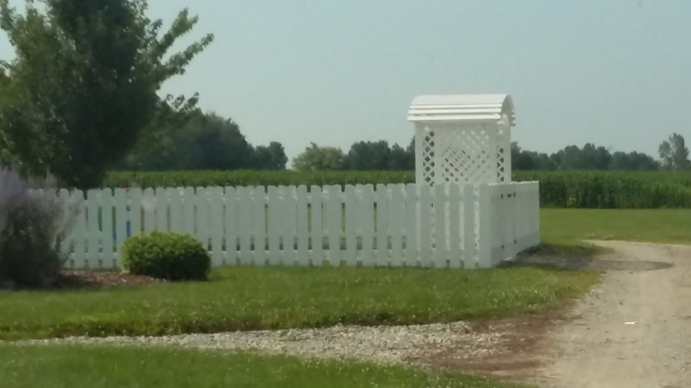
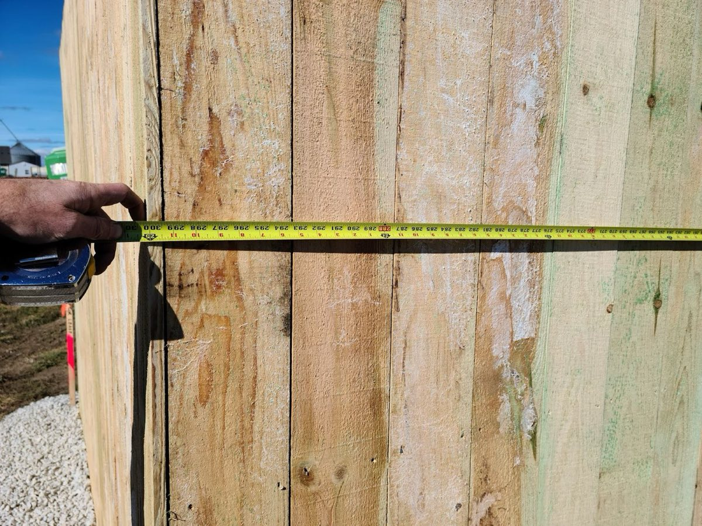

Frankfort, Indiana · Clinton County
Built boardby board,by family.
Crawford Family Fence is a family owned and operated company in Frankfort. Josh and Jennifer Crawford build privacy, picket, vinyl, chain link and farm fence, plus gates, arbors, pergolas and decks.
Mon–Sat 7 AM–9 PM · Sun 9 AM–5 PM

Quality craftsmanship, with customer service as the priority.
That is how the Crawfords describe their own company, and it is what their customers keep writing about. Jennifer is the one who stays in touch and walks you through the process, from the first quote to the day the crew arrives.
Josh is the builder. One customer put it simply: he built the fence board by board, and it is sturdy enough to stand for decades. When the job is done, the yard is cleaned up, down to the last metal piece.
“We value our customers as though they are family!”Crawford Family Fence, replying to a customer
Four lines on the truck door. Everything in between.

All types of fencing
Wood privacy and shadow box, vinyl, white and wood picket, horizontal board, chain link and farm fence, with matching gates.
Temporary panels
Temporary fence panels for when you need a boundary for a while, not forever.
Arbors & pergolas
Entry arbors with gates, like the white vinyl arbor and picket gate in our work, plus pergolas for the yard.
Decks
New decks and porches, and remodels of existing ones, with stairs, railings and lattice skirting.
Straight lines, tight gaps.




of “the straightest, gapless fence you’ll ever see,” finished in about three days for one customer.
the distance the crew drove to build one family’s stick-built total privacy fence.
fencing, temporary panels, arbors & pergolas, and decks, all from one crew.
From the first call to the last post.
- I
Call for a quote
Call (765) 650-0250. Estimates can be done online or on-site. Customers say the quote was easy to get.
- II
Plan it together
Design, style, height, gates. Sharing a fence line with a neighbor? The quote can be split so each side pays for their part.
- III
Get on the schedule
Jennifer keeps you updated. Small jobs have been fit in the same week, and no one rushes you if you need months to decide.
- IV
Built & cleaned up
The crew builds it straight and tidy, then cleans up so no metal pieces are left in the yard.
What neighbors say over the fence.
“Josh is a true craftsman, he built the fence board by board and we now have a beautiful sturdy fence that will be standing for decades.”
“I have used Crawford Family Fence twice over the last 3 years. They expanded my fence to enclose my whole yard and installed a very large rolling gate the first time around… The quality of work is fantastic and the price is very reasonable.”
“I had Crawford Family Fence install a farm fence for my donkeys and goats. They were the nicest people to deal with… They made sure everything was done, cleaned up, and no metal pieces left behind before they left.”
“Quote was easy to get, fencing date was scheduled quickly, quality work in a timely manner, affordable. We would definitely use them again!”
“Crawford Family Fence installed my Shadow Box fence in 2019. Great price. Great people to work with… They were very responsive and on-time with all commitments.”
“I got a super quick response and quote and they were able to fit my somewhat small project in the same week I called because my old fence was falling down… My new fence is beautiful.”
“They waited patiently for months for me to decide, once I did they had it done in nearly 3 days. 360 feet of the straightest, gapless fence you’ll ever see.”
Good to know before you call.

Do you repair fences and gates, or only build new ones?
Both. Crawford Family Fence installs new fences and gates and also repairs existing ones: replacing fallen or leaning sections, fixing sagging gates and adding gates to an older fence.
My neighbor and I want to share a fence. Can you split the quote?
Yes. Customers have had the quote split out between neighbors so each side pays for their own portion.
Do you build farm and livestock fence?
Yes. Farm fence, including fencing for goats and donkeys, rail fence and long field lines, is part of the work.
Do you only do fences?
No. The truck says it best: all types of fencing, temporary panels, arbors & pergolas, and decks.
Do you work for businesses too?
Yes, residential and commercial: privacy enclosures for dumpsters and utilities, chain link, and park fencing such as the creek fence at Prairie Creek Park in Frankfort.
How do I get an estimate?
Call (765) 650-0250. Estimates can be done online or on-site.
Tell us about your fence.
Fill in the basics and we’ll put your request together. The fastest way is still a phone call.
- (765) 650-0250
- 3706 IN-39, Frankfort, IN 46041
- Mon–Sat 7 AM–9 PM · Sun 9 AM–5 PM
| Monday | 7 AM – 9 PM |
|---|---|
| Tuesday | 7 AM – 9 PM |
| Wednesday | 7 AM – 9 PM |
| Thursday | 7 AM – 9 PM |
| Friday | 7 AM – 9 PM |
| Saturday | 7 AM – 9 PM |
| Sunday | 9 AM – 5 PM |